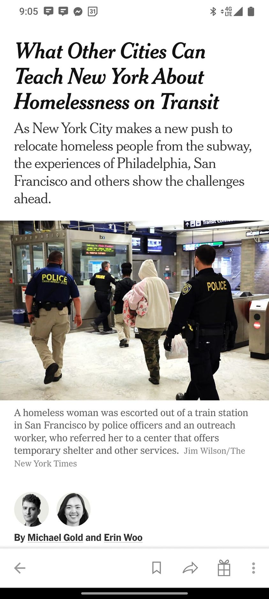

Mobile uploads
The main problem with addressing the growing tragedy of homelessness due to extreme evictions and exploding rent prices is that it is bureaucrats, and social workers who are being tasked with solving the problem.
Business people have their own problems. But some of their strengths are innovation and radical transformation.
The business world needs to be involved in these solutions. Otherwise it's going to just be more shelters that homeless people hate and building housing that is unsustainably expensive.
Bureaucrats are conservatives that just want to see more of the same.
Business people are liberals that focus on new ideas that are cheaper, better and faster.